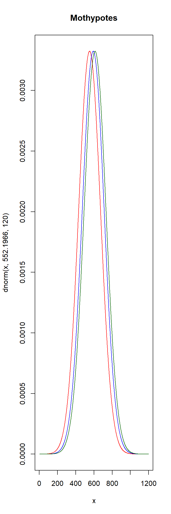

Kapitel 9 Figurer
R ger tillgång till omfattande möjligheter för datavisualisering. Dels ger basversionen i R stor frihet, dels finns det paket (exempelvis ggplot2 och lattice) som ger ytterligare funktioner, men som också förenklar skapandet av figurer.
Det går att klassificera syftet med figurer enligt följande:
- Figurer primärt avsedda för dataanalytikern, där syftet är att studera data explorativt, kontrollera att förutsättningar är uppfyllda och förmedla preliminära resultat. Estetiska och pedagogiska aspekter hos sådana figurer är sekundär eftersom det
- Figurer avsedda att presenteras för en publik och ska finnas med i en rapport, vetenskaplig artikel eller ett bildspel. En sådan figur ska på ett tydligt och korrekt redovisa det väsentliga i en analys och den ska även vara estetiskt fullgod.
Beroende på syfte tar det olika lång tid att skapa figurer. Det finns komplicerade figurer som kan ta flera timmar att skapa.
Wilke delar in figurer i
- Oestetisk. Figurer är i många avseenden korrekt
- Dålig
- Fel
insark <- read.csv2("D:/conscriptiondata.csv")
n <- 10000
set.seed(12345)
df <- insark[sample(insark$id, n), ]
names(insark)> [1] "id" "year" "height" "weight"
> [5] "psych" "muscle" "armstrength" "physical"
> [9] "gripstrength" "legstrength" "sbp" "dbp"
> [13] "officer" "testa" "testb" "testc"
> [17] "testd"df$year_cat <- NA
df$year_cat[(df$year >= 1961) & (df$year < 1966)] <- 1
df$year_cat[(df$year >= 1966) & (df$year < 1970)] <- 2
df$year_cat[(df$year >= 1971) & (df$year < 1975)] <- 3
df$year_cat <- factor(df$year_cat)
levels(df$year_cat) <- c("1961-1965", "1966-1970", "1970-1975")
df$testa_cat[df$testa < 10] <- 1
df$testa_cat[(df$testa >= 10) & (df$testa < 20)] <- 2
df$testa_cat[(df$testa >= 20) & (df$testa < 30)] <- 3
df$testa_cat[(df$testa >= 30)] <- 4
df$testa_cat <- factor(df$testa_cat)
df$testa_cat <- NA
df$testa_cat[df$testa < 10] <- 1
df$testa_cat[(df$testa >= 10) & (df$testa < 20)] <- 2
df$testa_cat[(df$testa >= 20) & (df$testa < 30)] <- 3
df$testa_cat[(df$testa >= 30)] <- 4
df$testa_cat <- factor(df$testa_cat)
df$testb_cat <- NA
df$testb_cat[df$testb < 10] <- 1
df$testb_cat[(df$testb >= 10) & (df$testb < 20)] <- 2
df$testb_cat[(df$testb >= 20) & (df$testb < 30)] <- 3
df$testb_cat[(df$testb >= 30)] <- 4
df$testb_cat <- factor(df$testb_cat)
df$testc_cat <- NA
df$testc_cat[df$testc < 10] <- 1
df$testc_cat[(df$testc >= 10) & (df$testc < 20)] <- 2
df$testc_cat[(df$testc >= 20) & (df$testc < 30)] <- 3
df$testc_cat[(df$testc >= 30)] <- 4
df$testc_cat <- factor(df$testc_cat)
df$testd_cat <- NA
df$testd_cat[df$testd < 10] <- 1
df$testd_cat[(df$testd >= 10) & (df$testd < 20)] <- 2
df$testd_cat[(df$testd >= 20) & (df$testd < 30)] <- 3
df$testd_cat[(df$testd >= 30)] <- 4
df$testd_cat <- factor(df$testd_cat)
par(mfrow=c(2,2))
freqtable_testa <- table(df$testa_cat)
barplot(freqtable_testa, col="lightblue", main="OK",
ylab="Antal", xlab = "Poäng test A",
ylim=c(0,5000), border="white",
names.arg = c("0-9", "10-19", "20-29", "30-40"))
grid(nx=NA, ny=NULL)
barplot(freqtable_testa, col="lightblue", main="OK",
ylab="Antal", xlab = "Poäng test A",
ylim=c(0,5000), border="white",
names.arg = c("0-9", "10-19", "20-29", "30-40"), add=TRUE)
barplot(freqtable_testa, main="Oestetisk",
col=c(4,7,5,2),
xlab = "Poäng test A", ylab="Antal",
ylim=c(0,5000), border="white",
names.arg = c("0-9", "10-19", "20-29", "30-40"))
grid(nx=NA, ny=NULL)
barplot(freqtable_testa, main="Dålig",
col="lightblue",
ylab="Antal", xlab = "Poäng test A",
ylim=c(0,20000), border="white",
)
barplot(freqtable_testa, main="Felaktig",
col="lightblue",
ylab="", xlab = "Test",
ylim=c(0,10000), border="white",
xaxt='n', yaxt='n')
insark <- read.csv2("D:/conscriptiondata.csv")
n <- 10000
set.seed(12345)
df <- insark[sample(insark$id, n), ]
names(insark)> [1] "id" "year" "height" "weight"
> [5] "psych" "muscle" "armstrength" "physical"
> [9] "gripstrength" "legstrength" "sbp" "dbp"
> [13] "officer" "testa" "testb" "testc"
> [17] "testd"df$year_cat <- NA
df$year_cat[(df$year >= 1961) & (df$year < 1966)] <- 1
df$year_cat[(df$year >= 1966) & (df$year < 1970)] <- 2
df$year_cat[(df$year >= 1971) & (df$year < 1975)] <- 3
df$year_cat <- factor(df$year_cat)
levels(df$year_cat) <- c("1961-1965", "1966-1970", "1970-1975")
df$testa_cat[df$testa < 10] <- 1
df$testa_cat[(df$testa >= 10) & (df$testa < 20)] <- 2
df$testa_cat[(df$testa >= 20) & (df$testa < 30)] <- 3
df$testa_cat[(df$testa >= 30)] <- 4
df$testa_cat <- factor(df$testa_cat)
df$testa_cat <- NA
df$testa_cat[df$testa < 10] <- 1
df$testa_cat[(df$testa >= 10) & (df$testa < 20)] <- 2
df$testa_cat[(df$testa >= 20) & (df$testa < 30)] <- 3
df$testa_cat[(df$testa >= 30)] <- 4
df$testa_cat <- factor(df$testa_cat)
df$testb_cat <- NA
df$testb_cat[df$testb < 10] <- 1
df$testb_cat[(df$testb >= 10) & (df$testb < 20)] <- 2
df$testb_cat[(df$testb >= 20) & (df$testb < 30)] <- 3
df$testb_cat[(df$testb >= 30)] <- 4
df$testb_cat <- factor(df$testb_cat)
df$testc_cat <- NA
df$testc_cat[df$testc < 10] <- 1
df$testc_cat[(df$testc >= 10) & (df$testc < 20)] <- 2
df$testc_cat[(df$testc >= 20) & (df$testc < 30)] <- 3
df$testc_cat[(df$testc >= 30)] <- 4
df$testc_cat <- factor(df$testc_cat)
df$testd_cat <- NA
df$testd_cat[df$testd < 10] <- 1
df$testd_cat[(df$testd >= 10) & (df$testd < 20)] <- 2
df$testd_cat[(df$testd >= 20) & (df$testd < 30)] <- 3
df$testd_cat[(df$testd >= 30)] <- 4
df$testd_cat <- factor(df$testd_cat)
par(mfrow=c(2,2))
freqtable_testa <- table(df$testa_cat)
barplot(freqtable_testa, col="lightblue", main="OK",
ylab="Antal", xlab = "Poäng test A",
ylim=c(0,5000), border="white",
names.arg = c("0-9", "10-19", "20-29", "30-40"))
grid(nx=NA, ny=NULL)
barplot(freqtable_testa, col="lightblue", main="OK",
ylab="Antal", xlab = "Poäng test A",
ylim=c(0,5000), border="white",
names.arg = c("0-9", "10-19", "20-29", "30-40"), add=TRUE)
barplot(freqtable_testa, main="Oestetisk",
col=c(4,7,5,2),
xlab = "Poäng test A", ylab="Antal",
ylim=c(0,5000), border="white",
names.arg = c("0-9", "10-19", "20-29", "30-40"))
grid(nx=NA, ny=NULL)
barplot(freqtable_testa, main="Dålig",
col="lightblue",
ylab="Antal", xlab = "Poäng test A",
ylim=c(0,20000), border="white",
)
barplot(freqtable_testa, main="Felaktig",
col="lightblue",
ylab="", xlab = "Test",
ylim=c(0,10000), border="white",
xaxt='n', yaxt='n')
Den första figuren är OK eftersom den redovisar stapeldiagramen utan felaktigheter. Den andra figuren har oestetisk beträffande färgval och har hjälplinjer som löper över staplarna istället för bakom. Figuren som klassas som dålig är korrekt, men det är svårt att urskilja detaljer i den. Den felaktiga figuren visar staplarna men ingen övrigr information som gör figuren möjlig att tolka.
Notera att distinktionen oestetisk-dålig-felaktig är flytande. Färgvalet kan innebär att faktiskt är dålig eftersom . Att ha olika färger på staplar innebär att tolkningen av innebär att läsaren kan föranledas att tro att det ytterligare information som inte finns. En korrekt figur som är dålig, kanske är så dålig att den misstolkasm vilket innebär att den egentligen är felaktig.
9.1 Typer av figurer
9.1.1 Presentation av aggregerade data
Aggregerade data (summor, antal, medelvärden, andelar) presenteras ofta i
- stapeldiagram, där R använder funktionen barplot().
- punktdiagram, där R använder funktionen dotchart().
I princip redovisas grafiskt värden presenteras i en tabell, men en grafisk presentation blir enklare att avläsa. På grund av relationen mellan stapeldiagram och tabeller används i R ett skapat tabellobjekt i stapeldiagramsfunktionen barplot för att skapa stapeldiagram.
Det finns olika typer av stapeldiagram.
library("WDI")
wdi_dat <- WDI(indicator = c("SP.POP.TOTL", "NY.GDP.PCAP.KD", "SP.DYN.IMRT.IN"),
start = 2018, end = 2018, extra = TRUE)
wdieu <- subset(wdi_dat,
country %in% c("Denmark", "Finland", "Iceland", "Norway",
"Sweden"))
dotchart(wdieu$SP.POP.TOTL, labels = wdieu$country, cex=1.1)
dotchart(sort(wdieu$SP.POP.TOTL/1000000),
labels = wdieu$country[order(wdieu$SP.POP.TOTL)],
xlab = "Population (million)")
help(t.test)
freqtable_psych <- table(df$psych)
kable(freqtable_psych, format ="html")
Error in kable(freqtable_psych, format = "html"): could not find function "kable"
barplot(freqtable_psych, colnames = c("Kategori", "Antal"))
Warning in plot.window(xlim, ylim, log = log, ...): "colnames" is not a
graphical parameter
Warning in axis(if (horiz) 2 else 1, at = at.l, labels = names.arg, lty =
axis.lty, : "colnames" is not a graphical parameter
Warning in title(main = main, sub = sub, xlab = xlab, ylab = ylab, ...):
"colnames" is not a graphical parameter
Warning in axis(if (horiz) 1 else 2, cex.axis = cex.axis, ...): "colnames"
is not a graphical parameter
barplot(freqtable_psych, horiz = TRUE)
dotchart(freqtable_psych)
Warning in dotchart(freqtable_psych): 'x' is neither a vector nor a matrix:
using as.numeric(x)library("WDI")
wdi_dat <- WDI(indicator = c("SP.POP.TOTL", "NY.GDP.PCAP.KD", "SP.DYN.IMRT.IN"),
start = 2018, end = 2018, extra = TRUE)
wdieu <- subset(wdi_dat,
country %in% c("Belgium", "Bulgaria", "Czech Republic", "Denmark",
"Germany", "Estonia", "Ireland", "Greece", "Spain",
"France", "Croatia", "Italy", "Cyprus", "Latvia",
"Lithuania", "Luxembourg", "Hungary", "Malta",
"Netherlands", "Austria", "Poland", "Portugal", "Romania",
"Slovenia", "Slovakia", "Finland", "Sweden", "United Kingdom"))
dotchart(wdieu$SP.POP.TOTL, labels = wdieu$country, cex=1.1)
dotchart(sort(wdieu$SP.POP.TOTL/1000000),
labels = wdieu$country[order(wdieu$SP.POP.TOTL)],
xlab = "Population (million)")
Det finns lite riktlinjer
proptable_psych <- prop.table(freqtable_psych)
freqtable_psych_year <- table(factor(df$testa_cat), df$year_cat)
barplot(freqtable_psych_year, beside=TRUE, ylab="Antal")
proptable_psych_year <- 100*prop.table(freqtable_psych_year, margin = 2 )
barplot(proptable_psych_year, beside=TRUE, ylab="Procent (%)")
Some key rules for table layout are the following:
Do not use vertical lines. Do not use horizontal lines between data rows. (Horizontal lines as separator between the title row and the first data row or as frame for the entire table are fine.) Text columns should be left aligned. Number columns should be right aligned and should use the same number of decimal digits throughout. Columns containing single characters are centered. The header fields are aligned with their data, i.e., the heading for a text column will be left aligned and the heading for a number column will be right aligned.
9.2 Lådagram
Lådagram används främst när vi ska jämföra fördelningar uppdelat på kategorier. Att använda lådagram för en enda variabel är inte optimalt, utan histogram ger då mer information.
Vi vill studera testresultat uppdelat på psykologisk bedämning
boxplot(df$gripstrength~df$psych, xlab="Psykologisk bedömning (1-9)", ylab="Greppstyrka (Newton)") ## Histogram Histogram används för att visualisera en kontinuerlig variabel. Funktionen hist() skapar ett histogram. Nackdelen med histogram är att den är känslig för antalet klasser. Testa därför olika antal klasser.
## Histogram Histogram används för att visualisera en kontinuerlig variabel. Funktionen hist() skapar ett histogram. Nackdelen med histogram är att den är känslig för antalet klasser. Testa därför olika antal klasser.
par(mfrow = c(2,2))
hist(df$gripstrength, xlab="Greppstyrka (Newton)", ylab="Antal", breaks=7, main="7 klasser")
hist(df$gripstrength, xlab="Greppstyrka (Newton)", ylab="Antal", breaks=14, main="14 klasser")
hist(df$gripstrength, xlab="Greppstyrka (Newton)", ylab="Antal", breaks=28, main="28 klasser")
hist(df$gripstrength, xlab="Greppstyrka (Newton)", ylab="Antal", breaks=56, main="56 klasser")
9.3 Spridningsdiagram
Den vanligaste funktionen i R för att skapa figurer är plot. Det finns många argument och i de närmaste obegränsade möjligher att anpassa figurerna
plot(df$legstrength, df$armstrength, xlab = "Benstyrka (Newton)", ylab = "Armstyrka (Newton)")
9.4 Några frekvent förekommande diagram.
I surveydata stöter vi ofta på uppdelade stapeldiagram. Dessa figurer har en inneboende problem eftersom kategorierna storlek kan vara svåra att relatera till varandra. Samtidigt är de en visualisering som gör det enkelt att jämföra fördelningar för många variabler av typen attitydfrågor. För att illustrera kategoriserar vi testresultat på begåvningstesterna i INSARK enligt nedanstående schema.
df$testa_cat <- NA
df$testa_cat[df$testa < 10] <- 1
df$testa_cat[(df$testa >= 10) & (df$testa < 20)] <- 2
df$testa_cat[(df$testa >= 20) & (df$testa < 30)] <- 3
df$testa_cat[(df$testa >= 30)] <- 4
df$testa_cat <- factor(df$testa_cat)
df$testb_cat <- NA
df$testb_cat[df$testb < 10] <- 1
df$testb_cat[(df$testb >= 10) & (df$testb < 20)] <- 2
df$testb_cat[(df$testb >= 20) & (df$testb < 30)] <- 3
df$testb_cat[(df$testb >= 30)] <- 4
df$testb_cat <- factor(df$testb_cat)
df$testc_cat <- NA
df$testc_cat[df$testc < 10] <- 1
df$testc_cat[(df$testc >= 10) & (df$testc < 20)] <- 2
df$testc_cat[(df$testc >= 20) & (df$testc < 30)] <- 3
df$testc_cat[(df$testc >= 30)] <- 4
df$testc_cat <- factor(df$testc_cat)
df$testd_cat <- NA
df$testd_cat[df$testd < 10] <- 1
df$testd_cat[(df$testd >= 10) & (df$testd < 20)] <- 2
df$testd_cat[(df$testd >= 20) & (df$testd < 30)] <- 3
df$testd_cat[(df$testd >= 30)] <- 4
df$testd_cat <- factor(df$testd_cat)
Likert_table <- 100*cbind( prop.table( table( df$testd_cat) ),
prop.table( table( df$testc_cat) ),
prop.table( table( df$testb_cat) ),
prop.table( table( df$testa_cat) ) )
colnames(Likert_table) <- c("Testa D", "Test C", "Test B", "Test A")
bar1 <- barplot(Likert_table, horiz = TRUE,
col = c("brown3", "brown1", "cadetblue1", "cadetblue4"),
xlab="Procent (%)", las=1)
abline(v=50)
legend("top", fill = c("brown3", "brown1", "cadetblue1", "cadetblue4"),
legend = c("Kategori 1", "Kategori 2", "Kategori 3", "Kategori 4"),
horiz = TRUE, inset = c(0,-0.1), xpd = TRUE, bty="n")
barplot(Likert_table, horiz = FALSE, beside=TRUE,
col = c("brown3", "brown1", "cadetblue1", "cadetblue4"),
xlab="Procent (%)", las=1)
legend("top", fill = c("brown3", "brown1", "cadetblue1", "cadetblue4"),
legend = c("Kategori 1", "Kategori 2", "Kategori 3", "Kategori 4"),
horiz = TRUE, inset = c(0,-0.1), xpd = TRUE, bty="n")
Ett alternativ är att använda paketet likert. Notera att som input hanterar den bara faktorer! Dessutom inkluderas inte variabler i form av en matris. Funktionen har mycket
install.packages("likert")
library("likert")
> Loading required package: ggplot2
> Loading required package: xtable
likertdata <- likert(data.frame(df$testa_cat, df$testb_cat, df$testc_cat, df$testd_cat))
plot(likertdata)
?likert